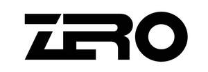

Trade Mark Journal No.2026/005 30 January 2026
UK00004320774 8 January 2026 (3,8,9,14,18,25,28)

- Class 3
- Shampoos; Cakes of toilet soap; Cleansing milk for toilet purposes; Bath preparations, not for medical purposes; Laundry preparations; Washing-up liquids; Cleaning preparations; Shoe polish; Shoe cream; Shoe wax; Essential oils for cosmetic purposes; Cosmetics; Perfumes; Lipsticks; Cotton wool for cosmetic purposes; Toothpaste; Breath freshening sprays; Agarwood [incense]; Air fragrancing preparations; Cosmetics for animals.
- Class 8
- Abrading instruments [hand instruments]; Blade sharpening instruments; Garden tools, hand-operated; Harpoons; Nail clippers, electric or non-electric; Beard clippers; Razors, electric or non-electric; Manicure sets, electric; Hair clippers for personal use, electric and non-electric; Hand tools, hand-operated; Spanners [hand tools]; Screwdrivers, non-electric; Clothes irons; Air pumps, hand-operated; Tweezers; Hobby knives [scalpels]; Scissors; Knives; Table cutlery [knives, forks and spoons]; Cutlery.
- Class 9
- Smartwatches; Smartglasses; Time recording apparatus; Time clocks [time recording devices]; Bathroom scales; Rulers [measuring instruments]; Mobile telephones; Cases for smartphones; Screen protectors for mobile telephones; Smart speakers; Headphones; Selfie sticks [hand-held monopods]; Telescopes; Switches, electric; Goggles for sports; Sunglasses; Biometric locks; 3D spectacles; Portable power chargers; Sports whistles.
- Class 14
- Precious metals, unwrought or semi-wrought; Jewellery boxes; Jewellery findings; Jewellery; Brooches [jewellery]; Necklaces [jewellery]; Silver thread [jewellery]; Jewellery charms; Earrings; Pins [jewellery]; Shoe jewellery; Split rings of precious metal for keys; Key rings [split rings with trinket or decorative fob]; Jewellery hat pins; Works of art of precious metal; Clocks; Wristwatches; Watch bands; Clocks and watches, electric; Chronometric instruments.
- Class 18
- Animal skins; Imitation leather; Card cases [notecases]; Attaché cases; Pocket wallets; School bags; Rucksacks; Handbags; Travelling bags; Bags for sports; Key cases; Business card cases; Shoulder belts [straps] of leather; Umbrellas; Mountaineering sticks; Straps of leather [saddlery]; Backpacks for carrying infants; Leathercloth; Conference folders; Parasols.
- Class 25
- Clothing; Sandals; Swimsuits; Sports shoes; Shoes; Hats; Hosiery; Gloves [clothing]; Neckties; Girdles; Ready-made clothing; Overcoats; Trousers; Bath slippers; Fittings of metal for footwear; Coats; Tee-shirts; Underwear; Bath robes; Layettes [clothing].
- Class 28
- Apparatus for games; Conjuring apparatus; Toys; Remote-controlled toy vehicles; Scooters [toys]; Chess games; Playing cards; Balls for games; Rackets; Shuttlecocks; Pumps specially adapted for use with balls for games; Body-building apparatus; Archery implements; Machines for physical exercises; Abdomen protectors for sports ; Snowshoes; Ornaments for Christmas trees, except lights, candles and confectionery; Fishing tackle; Elbow guards for sports; Knee guards for sports use.
ITALY ZERO (GROUP) HOLDING LIMITED
Representative: QUN CHI